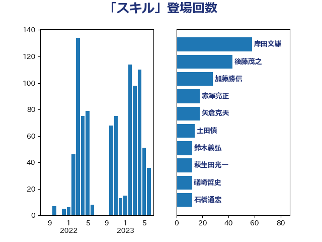

単語「スキル」

| 岸田文雄 | 自由民主党 | 58 回 |
| 後藤茂之 | 自由民主党 | 43 回 |
| 加藤勝信 | 自由民主党 | 28 回 |
| 赤澤亮正 | 自由民主党 | 18 回 |
| 矢倉克夫 | 公明党 | 18 回 |
| 土田慎 | 自由民主党 | 14 回 |
| 鈴木義弘 | 国民民主党 | 12 回 |
| 萩生田光一 | 自由民主党 | 12 回 |
| 礒崎哲史 | 国民民主党 | 12 回 |
| 石橋通宏 | 立憲民主党 | 12 回 |
| 野田聖子 | 自由民主党 | 11 回 |
| 河野太郎 | 自由民主党 | 11 回 |
| 熊谷裕人 | 立憲民主党 | 10 回 |
| 吉田はるみ | 立憲民主党 | 9 回 |
| 大島敦 | 立憲民主党 | 8 回 |
| 鈴木敦 | 国民民主党 | 7 回 |
| 浅野哲 | 国民民主党 | 7 回 |
| 村田享子 | 立憲民主党 | 7 回 |
| 國重徹 | 公明党 | 7 回 |
| 倉林明子 | 日本共産党 | 7 回 |
| 高木かおり | 日本維新の会 | 6 回 |
| 阿部司 | 日本維新の会 | 6 回 |
| 西岡秀子 | 国民民主党 | 6 回 |
| 藤田文武 | 日本維新の会 | 6 回 |
| 池下卓 | 日本維新の会 | 6 回 |
| 川合孝典 | 国民民主党 | 6 回 |
| 宮路拓馬 | 自由民主党 | 6 回 |
| 安江伸夫 | 公明党 | 6 回 |
| 鈴木俊一 | 自由民主党 | 5 回 |
| 西村康稔 | 自由民主党 | 5 回 |
| 田中昌史 | 自由民主党 | 5 回 |
| 田中健 | 国民民主党 | 5 回 |
| 牧島かれん | 自由民主党 | 5 回 |
| 渡辺周 | 立憲民主党 | 5 回 |
| 永岡桂子 | 自由民主党 | 5 回 |
| 末松信介 | 自由民主党 | 5 回 |
| 平林晃 | 公明党 | 5 回 |
| 小倉將信 | 自由民主党 | 5 回 |
| 佐藤英道 | 公明党 | 5 回 |
| 伊藤孝恵 | 国民民主党 | 5 回 |
| 馬場雄基 | 立憲民主党 | 4 回 |
| 音喜多駿 | 日本維新の会 | 4 回 |
| 若宮健嗣 | 自由民主党 | 4 回 |
| 芳賀道也 | 国民民主党 | 4 回 |
| 自見はなこ | 自由民主党 | 4 回 |
| 福重隆浩 | 公明党 | 4 回 |
| 田畑裕明 | 自由民主党 | 4 回 |
| 浅田均 | 日本維新の会 | 4 回 |
| 松本剛明 | 自由民主党 | 4 回 |
| 松山政司 | 自由民主党 | 4 回 |
| 日下正喜 | 公明党 | 4 回 |
| 山際大志郎 | 自由民主党 | 4 回 |
| 佐々木さやか | 公明党 | 4 回 |
| 今井絵理子 | 自由民主党 | 4 回 |
| 仁木博文 | 無所属 | 4 回 |
| 馬淵澄夫 | 立憲民主党 | 3 回 |
| 重徳和彦 | 立憲民主党 | 3 回 |
| 竹谷とし子 | 公明党 | 3 回 |
| 石垣のりこ | 立憲民主党 | 3 回 |
| 片山さつき | 自由民主党 | 3 回 |
| 湯原俊二 | 立憲民主党 | 3 回 |
| 河西宏一 | 公明党 | 3 回 |
| 杉久武 | 公明党 | 3 回 |
| 川田龍平 | 立憲民主党 | 3 回 |
| 山崎誠 | 立憲民主党 | 3 回 |
| 堀場幸子 | 日本維新の会 | 3 回 |
| 吉田統彦 | 立憲民主党 | 3 回 |
| 吉田久美子 | 公明党 | 3 回 |
| 吉川赳 | 無所属 | 3 回 |
| 吉川沙織 | 立憲民主党 | 3 回 |
| 高橋千鶴子 | 日本共産党 | 2 回 |
| 高木真理 | 立憲民主党 | 2 回 |
| 長友慎治 | 国民民主党 | 2 回 |
| 谷川とむ | 自由民主党 | 2 回 |
| 谷公一 | 自由民主党 | 2 回 |
| 角田秀穂 | 公明党 | 2 回 |
| 菊田真紀子 | 立憲民主党 | 2 回 |
| 緑川貴士 | 立憲民主党 | 2 回 |
| 畦元将吾 | 自由民主党 | 2 回 |
| 田村智子 | 日本共産党 | 2 回 |
| 牧山ひろえ | 立憲民主党 | 2 回 |
| 浜田靖一 | 自由民主党 | 2 回 |
| 泉健太 | 立憲民主党 | 2 回 |
| 櫻井周 | 立憲民主党 | 2 回 |
| 森屋隆 | 立憲民主党 | 2 回 |
| 柳ヶ瀬裕文 | 日本維新の会 | 2 回 |
| 松沢成文 | 日本維新の会 | 2 回 |
| 星北斗 | 自由民主党 | 2 回 |
| 斉藤鉄夫 | 公明党 | 2 回 |
| 掘井健智 | 日本維新の会 | 2 回 |
| 打越さく良 | 立憲民主党 | 2 回 |
| 庄子賢一 | 公明党 | 2 回 |
| 平沼正二郎 | 自由民主党 | 2 回 |
| 川崎ひでと | 自由民主党 | 2 回 |
| 島村大 | 自由民主党 | 2 回 |
| 岬麻紀 | 日本維新の会 | 2 回 |
| 岡本あき子 | 立憲民主党 | 2 回 |
| 山本香苗 | 公明党 | 2 回 |
| 山崎正恭 | 公明党 | 2 回 |
| 小宮山泰子 | 立憲民主党 | 2 回 |
| 宮口治子 | 立憲民主党 | 2 回 |
| 守島正 | 日本維新の会 | 2 回 |
| 大家敏志 | 自由民主党 | 2 回 |
| 嘉田由紀子 | 無所属 | 2 回 |
| 古川禎久 | 自由民主党 | 2 回 |
| 加田裕之 | 自由民主党 | 2 回 |
| 伊藤渉 | 公明党 | 2 回 |
| 中条きよし | 日本維新の会 | 2 回 |
| 齋藤健 | 自由民主党 | 1 回 |
| 高階恵美子 | 自由民主党 | 1 回 |
| 高橋光男 | 公明党 | 1 回 |
| 高木陽介 | 公明党 | 1 回 |
| 高木宏壽 | 自由民主党 | 1 回 |
| 高市早苗 | 自由民主党 | 1 回 |
| 青山大人 | 立憲民主党 | 1 回 |
| 阿部知子 | 立憲民主党 | 1 回 |
| 阿部弘樹 | 日本維新の会 | 1 回 |
| 長峯誠 | 自由民主党 | 1 回 |
| 鎌田さゆり | 立憲民主党 | 1 回 |
| 金村龍那 | 日本維新の会 | 1 回 |
| 金城泰邦 | 公明党 | 1 回 |
| 野間健 | 立憲民主党 | 1 回 |
| 野田国義 | 立憲民主党 | 1 回 |
| 足立敏之 | 自由民主党 | 1 回 |
| 越智隆雄 | 自由民主党 | 1 回 |
| 谷田川元 | 立憲民主党 | 1 回 |
| 西銘恒三郎 | 自由民主党 | 1 回 |
| 西村明宏 | 自由民主党 | 1 回 |
| 茂木敏充 | 自由民主党 | 1 回 |
| 舩後靖彦 | れいわ新選組 | 1 回 |
| 羽生田俊 | 自由民主党 | 1 回 |
| 笠浩史 | 無所属 | 1 回 |
| 窪田哲也 | 公明党 | 1 回 |
| 空本誠喜 | 日本維新の会 | 1 回 |
| 稲津久 | 公明党 | 1 回 |
| 福島みずほ | 社会民主党 | 1 回 |
| 福岡資麿 | 自由民主党 | 1 回 |
| 神谷裕 | 立憲民主党 | 1 回 |
| 石川香織 | 立憲民主党 | 1 回 |
| 田嶋要 | 立憲民主党 | 1 回 |
| 田島麻衣子 | 立憲民主党 | 1 回 |
| 漆間譲司 | 日本維新の会 | 1 回 |
| 渡辺博道 | 自由民主党 | 1 回 |
| 武部新 | 自由民主党 | 1 回 |
| 森山浩行 | 立憲民主党 | 1 回 |
| 森屋宏 | 自由民主党 | 1 回 |
| 梅村聡 | 日本維新の会 | 1 回 |
| 東国幹 | 自由民主党 | 1 回 |
| 早坂敦 | 日本維新の会 | 1 回 |
| 斎藤嘉隆 | 立憲民主党 | 1 回 |
| 斎藤アレックス | 国民民主党 | 1 回 |
| 岡田直樹 | 自由民主党 | 1 回 |
| 山口那津男 | 公明党 | 1 回 |
| 山口俊一 | 自由民主党 | 1 回 |
| 小野泰輔 | 日本維新の会 | 1 回 |
| 小沼巧 | 立憲民主党 | 1 回 |
| 小池晃 | 日本共産党 | 1 回 |
| 小寺裕雄 | 自由民主党 | 1 回 |
| 宮本徹 | 日本共産党 | 1 回 |
| 宮本岳志 | 日本共産党 | 1 回 |
| 宮下一郎 | 自由民主党 | 1 回 |
| 宗清皇一 | 自由民主党 | 1 回 |
| 大石あきこ | れいわ新選組 | 1 回 |
| 大椿ゆうこ | 立憲民主党 | 1 回 |
| 塩田博昭 | 公明党 | 1 回 |
| 堂込麻紀子 | 無所属 | 1 回 |
| 和田義明 | 自由民主党 | 1 回 |
| 吉田宣弘 | 公明党 | 1 回 |
| 吉田とも代 | 日本維新の会 | 1 回 |
| 古屋範子 | 公明党 | 1 回 |
| 勝目康 | 自由民主党 | 1 回 |
| 住吉寛紀 | 日本維新の会 | 1 回 |
| 伊藤岳 | 日本共産党 | 1 回 |
| 伊藤孝江 | 公明党 | 1 回 |
| 伊東信久 | 日本維新の会 | 1 回 |
| 伊佐進一 | 公明党 | 1 回 |
| 中野洋昌 | 公明党 | 1 回 |
| 中川郁子 | 自由民主党 | 1 回 |
| 中川宏昌 | 公明党 | 1 回 |
| 世耕弘成 | 自由民主党 | 1 回 |
| 下野六太 | 公明党 | 1 回 |
| 上野通子 | 自由民主党 | 1 回 |
| 三浦信祐 | 公明党 | 1 回 |
| 三宅伸吾 | 自由民主党 | 1 回 |
| ながえ孝子 | 無所属 | 1 回 |